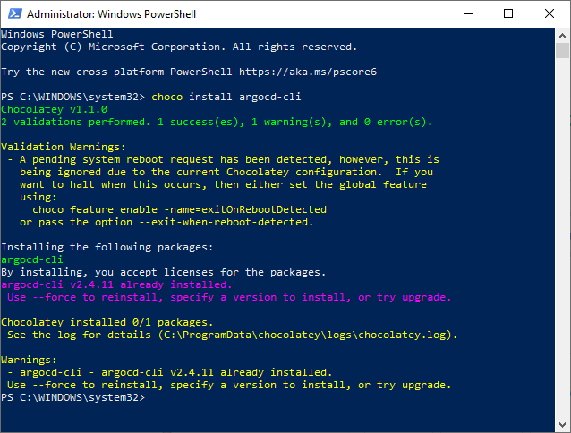

Install & Interact with ArgoCD CLI
Introduction
Argo CD, a powerful GitOps continuous delivery tool for Kubernetes, provides two interfaces for interacting with its server: the Argo CD Command-Line Interface (CLI) and the Argo CD web UI. In this guide, we will focus on installing the Argo CD CLI.
Before delving into the installation process, let's distinguish between the Argo CD CLI and the Argo CD web UI.
Argo CD CLI:
- The Argo CD CLI is a command-line interface that can be used to interact with an Argo CD server.
- It is a lightweight and fast way to perform tasks such as deploying, updating, and managing applications in Argo CD.
- The CLI provides advanced features such as scripting, automation, and integration with other tools and systems.
- The CLI provides direct access to the Argo CD API, allowing users to perform any action that is supported by the API.
Argo CD web UI:
- The Argo CD web UI is a graphical user interface that can be used to interact with an Argo CD server.
- It provides a visual representation of the applications and their current state in Argo CD, making it easy to manage and troubleshoot applications.
- The web UI provides an intuitive and user-friendly interface that requires no programming or scripting knowledge.
- It provides additional features such as visualization of the application dependencies and comparison of the application configurations.
Technical Scenario
You, as a DevSecOps Engineer, have been tasked with setting up the Argo CD CLI on your local environment. This will empower you to utilize the Argo CD CLI for local Kubernetes cluster management, especially when the Argo CD Web UI interface encounters issues or limitations.
Objective
In this exercise we will accomplish & learn how to implement following:
- Step 1: Install Argo CD CLI
- Step 2. Access the Argo CD API Server
- Step 3. Login to Argo CD
- Step 4. Logout Argo CD
Prerequisites
Before proceeding with the installation of Argo CD CLI, ensure you have the following prerequisites in place:
-
Azure Subscription: Sign up for an Azure subscription, if not already done.
-
Azure CLI: Install Azure CLI for Azure service interaction.
-
Kubectl: Install and set up kubectl for managing Kubernetes clusters.
-
Kubernetes Cluster: Ensure you have a running Kubernetes cluster available for ArgoCD deployment.
-
Argo CD Server: Confirm that the Argo CD server is deployed and accessible in your Kubernetes cluster.
-
Access Permissions: Verify that you have the necessary permissions to access and manage resources within the Kubernetes cluster. This includes permissions to deploy and update applications.
Step 1.Install Argo CD CLI
Install Argo CD CLI in windows using choco
Here are the instructions to install Argo CD CLI in Windows using Chocolatey (choco):
- Open the Windows Command Prompt or PowerShell as an administrator.
- Install Chocolatey package manager by running the following command:
- Once Chocolatey is installed, run the following command to install the Argo CD CLI: 
- Wait for the installation to complete. Chocolatey will automatically download and install the latest version of the Argo CD CLI.
- Verify that the Argo CD CLI is installed correctly by running the following command: output
This command should display the version of the Argo CD CLI installed on your system.
That's it! You have successfully installed the Argo CD CLI in Windows using Chocolatey. You can now use the CLI to interact with your Argo CD installation.
Install Argo CD CLI in Mac
Here are the instructions to install the Argo CD CLI on Mac:
- Open the Terminal app on your Mac.
- Install the Homebrew package manager by running the following command:
- Wait for the installation to complete. Homebrew will automatically download and install the latest version of the Argo CD CLI.
- Verify that the Argo CD CLI is installed correctly by running the following command: This command should display the version of the Argo CD CLI installed on your system.
That's it! You have successfully installed the Argo CD CLI on your Mac. You can now use the CLI to interact with your Argo CD installation.
Step 2. Access the Argo CD API Server
By default, the Argo CD API server is not exposed with an external IP. To access the API server, choose one of the following techniques to expose the Argo CD API server:
Service Type Load Balancer
Change the argocd-server service type to LoadBalancer by running following command in bash
reference - https://argo-cd.readthedocs.io/en/stable/getting_started/#4-login-using-the-cli
verify the new external IP address assigned to argocd-server service
NAME TYPE CLUSTER-IP EXTERNAL-IP PORT(S) AGE
argocd-applicationset-controller ClusterIP 10.25.250.229 <none> 7000/TCP 139m
argocd-dex-server ClusterIP 10.25.247.199 <none> 5556/TCP,5557/TCP 139m
argocd-redis ClusterIP 10.25.211.159 <none> 6379/TCP 139m
argocd-repo-server ClusterIP 10.25.233.23 <none> 8081/TCP 139m
argocd-server LoadBalancer 10.25.115.123 20.124.172.79 80:30119/TCP,443:30064/TCP 139m
Step 3. Login to Argo CD
WARNING: server certificate had error: x509: certificate signed by unknown authority. Proceed insecurely (y/n)? y
E0304 17:01:12.568936 151380 portforward.go:378] error copying from remote stream to local connection: readfrom tcp4 127.0.0.1:33532->127.0.0.1:33534: write tcp4 127.0.0.1:33532->127.0.0.1:33534: wsasend: An established connection was aborted by the software in your host machine.
Username: admin
Password:
'admin:login' logged in successfully
Context '20.124.172.79' updated
Note
keyboard copy paste was not working on command prompt, so I've right clicked on the mouse to enter the correct password here. also make sure that you keep the password in the notepad before start this lab, Install ArgoCD lab has command to get the admin password.
now let's verify the argocd cli login is working as expected by running following commands.
SERVER NAME VERSION STATUS MESSAGE PROJECT
https://kubernetes.default.svc in-cluster Unknown Cluster has no applications and is not being monitored.
Update the password using argocd cli
Step 4. Logout Argo CD
use the following command for exit from the context
outputverify the logout
outputtime="2023-03-04T17:10:28-08:00" level=fatal msg="rpc error: code = Unauthenticated desc = no session information"
That's it! You can now use the Argo CD CLI to interact with the Argo CD API server. Note that some API commands may require administrative privileges, so make sure you have the necessary permissions before using them.